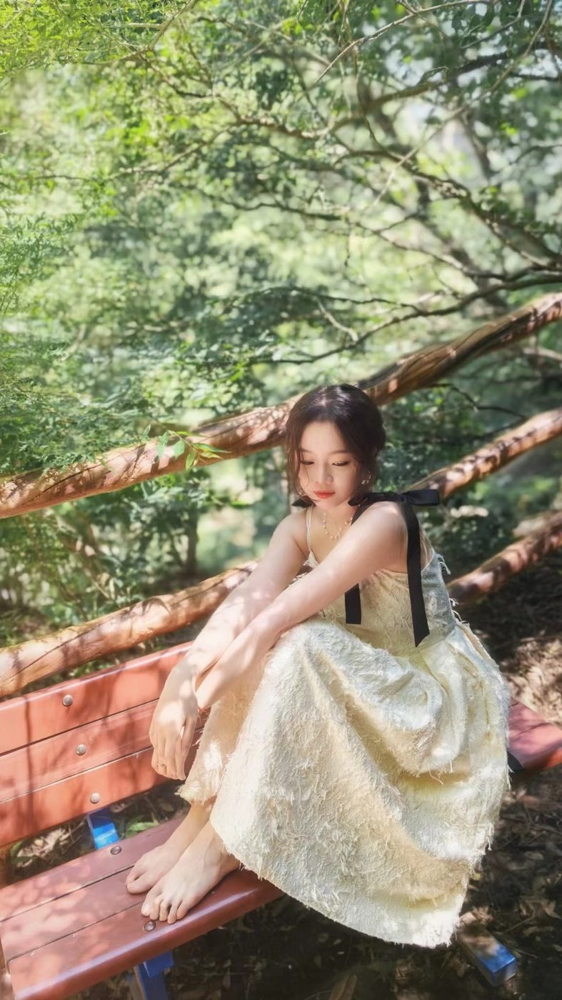
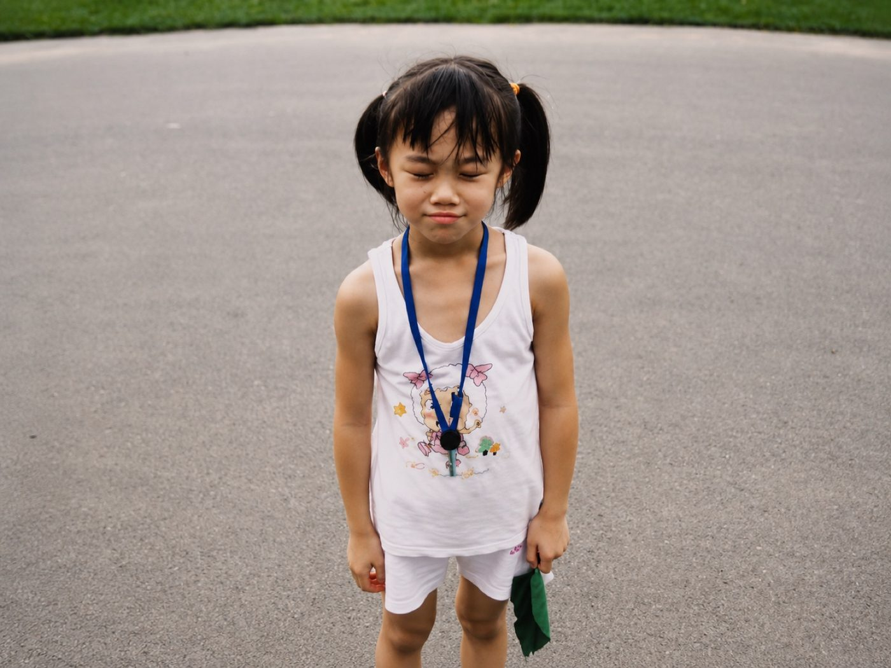
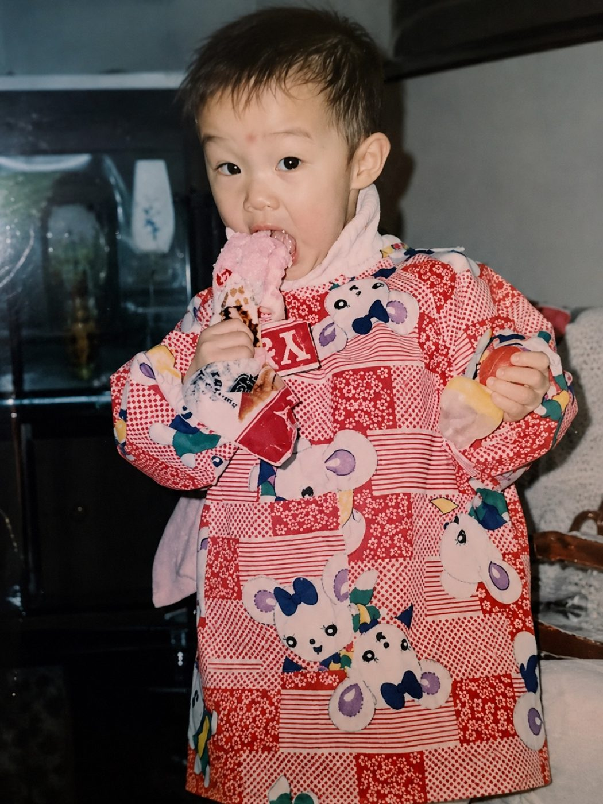

Short film · Writer & Director · in post-production at USC
The Call
From the hospital, she calls her husband and tells him he doesn't need to come. He doesn't. By the time he asks to try again, the divorce papers are on the table, and she has stopped waiting.
Original series · in development
The Kiss of Time 时间之吻
An eight-episode psychological suspense series developed with generative AI, about memory, power, identity, and who gets to define another person's time.
02Research
Whose suggestion would you take?
My editing teacher once asked me: “If AI gives you a suggestion and I give you one, whose would you take?” I said, “The one I like.”
It was an honest answer, but not yet an explanation. “Liking” turns out to be my understanding of a character: an expression or a gesture either belongs to the person I have in mind, or it is out of character. That is the judgment I study. When we make films with generative AI, how does a director decide what to keep, what to change, and what to let go?
Research interests
Directorial judgment and authorship in filmmaking with generative AI
Human–AI collaboration in screenwriting and film production
I am developing a short fiction film with generative AI, drawing on family stories. Along the way I record prompts, script revisions, and each decision to keep, change, or reject generated material, for discussion with the research team.
Selected writing
November 2026
Authorial Presence
Long-Form Narrative and the Reworking of Authorship in Collaboration with Generative AI
Traces how characters and plot changed across saved AI conversations and successive script drafts of The Kiss of Time.
October 2024
Women's Voices and the Limits of Compassion in This Is Life
A close reading of women's speech and silence in Chen Weijun's documentary series, and of how relatives, medical staff, and the editing frame their accounts.

03About
Who is Peihang?
A story in five scenes.

Ext. A small city in Northeast China — childhood
A little girl hangs upside down from the parallel bars. Trees, sky, people: everything looks unfamiliar the other way round, and she can't stop looking.
Int. Home — whenever Mom comes back from a shoot
Her mom is a documentary filmmaker, and the girl can hardly wait for the stories she brings home. Filming in a drought-stricken region, her mom noticed how long a little girl had gone without washing her hair. The girl remembers: stories hide in the details other people miss.
Ext. Beijing — eighteen
She has moved from her small northeastern city to Beijing for school. At eighteen she writes, directs, and acts in her first short, Hello, Decade, about a girl who makes the same move. The first cut is almost all voiceover. Her mom says: tell it with images and sound. So a paper airplane flies out of a window.
Ext. New York — 2021 to 2025
Film school in New York. With her mom, she writes The Breeze Blows Through Sahuan Valley: twenty-nine drafts, plus songs she writes for it. She notices she rarely knows what she wants at the start. She finds out while revising.
Int. Los Angeles — now
An MFA at USC, a new short in post. And a new question: when you make a film with AI, how does a director know when to say “move on”? When things get tense on set, she's still the first to crack a joke. At home, two cats: Li Guagua and Li Biga.
(The girl on the parallel bars? That's me.)
Director
Writer
Researcher
Songwriting & guitar
Piano
Little poems
Surprise planner
Education
Since Jan 2026
University of Southern California, School of Cinematic ArtsMFA, Film and Television Production
2021–2025
School of Visual Arts, New YorkBFA in Film, with Honors · Concentration in Directing · SHR Merit Scholarship
Experience
2025
Creative Director, YAH True Health and WellnessWrote and directed short videos for a health and wellness clinic in Manhattan.
2024–2025
Teaching Assistant & Editing Assistant, School of Visual ArtsAssisted Charles Kipps (Adaptation; Television) and Gina Abatemarco (Screenwriting; Advanced Screenwriting): feedback on student treatments and scripts, and help with editing.
2024
Editorial Intern, AT HOME & OVERSEAS MagazineOn-site interviews at the Forbidden City and a cultural feature.
2023–2024
Creative Director, Nashi (Beijing) Cultural CommunicationDirected short-form narrative videos.
04After hours
Life outside the frame
I like planning surprises for my friends and my mother. Even ordinary days deserve a little celebration.
A day at the parkSVA graduation, 2025Niagara FallsGolden hour

Little me, ice creamLooking at the cityLittle me, straw hatA night out
Songs, poems, gifts
Turning a feeling into something people can keep.
Writing songs and little poems is how I turn what I feel into something someone can keep. I wrote songs for The Breeze Blows Through Sahuan Valley.
The first website I ever made was a birthday present. I had never written code, so I taught myself and typed it line by line in VS Code, without AI. For my mom's fiftieth birthday, I made her an interactive gift with AI's help, and AI did most of the building. What I still had to decide was what she would find at each layer. That part is what made it hers.
The two-cat department
My supervisors have paws.
李瓜瓜GuaguaGentle and clingy. Loves naps, keeping me company, and anything fluffy.♡ 0李鼻嘎BigaA tuxedo cat with real camera presence.♡ 0
Tap a cat to pet.
05Say hello
Let's talk.
About films, about AI and authorship, or about making something together.